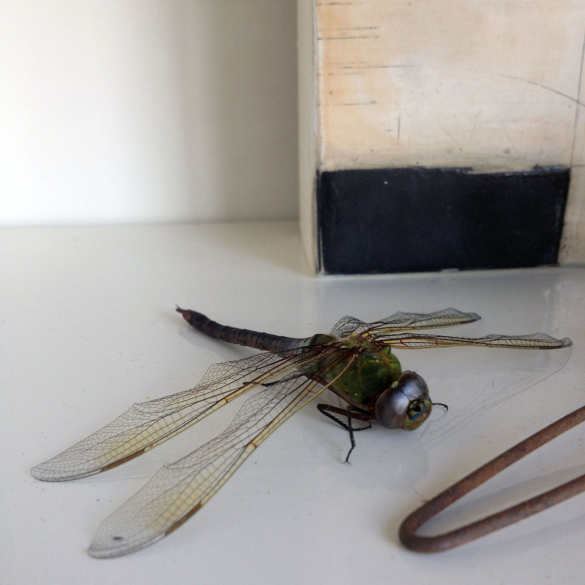

Directions
Create a simple <img> tag, shrink the dimensions (say, present an 1200x1200 jpeg as 500x500), and initiate the javascript.
Example
<img src="img/sample.jpg" class="my_image" width="500" height="500">
<script type="text/javascript">
$(function() {
$('.my_image').magnifyingFrame();
});
</script>

Default Settings
$('.my_image').magnifyingFrame({
css_transitions : true,
/* smooths motion and animates the zoom transition */
css_transition_speed : '0.1s'm
/* self-explanatory, probably won’t adjustment */
refresh_interval : 2,
/* increase if you have CPU issues */
frame_shadow : 'inset 0px 0px 20px rgba(0,0,0,0.5)',
/* creates an inset shadow while zooming */
mouseenter : function(),
mouseleave : function()
/* optional callback functions
note: use $(this.frame) to manipulate output */
});
Example with custom settings
<img src="img/sample.jpg" class="my_other_image" width="500" height="500">
<script type="text/javascript">
$(function() {
$('.my_other_image').magnifyingFrame({
frame_shadow : 'inset 5px 5px 30px rgba(0,0,0,1)',
mouseenter : function() {
$(this.frame).html('Say hello to my little dead friend.');
},
mouseleave : function() {
$(this.frame).html('');
}
});
});
</script>